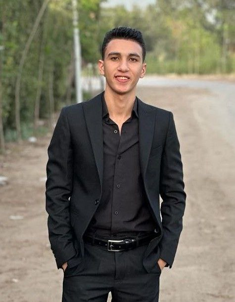

ZAKARIA ALAA FOUAD EISA

PROFILE
I’m a duel degree student at Computer Engineering and
Software Systems program at Ain shams University and
University of East London passionate about software
development.. Proficient in programming languages like
C++, Java(OOP),Java script ,Html ,CSS and more, adept at
developing applications across platforms like React js.
EDUCATION
Faculty of engineering at Ain
shams universit
2022-2027
WORK EXPERIENCE & PROJECTS
- SOFTWARE DEVELOPMENT MEMBER AT STP.
- Registration form for Macathon Competation( competation
for student activites).
- Social Media Application by java and use all the concepts
of OOP,using JavaFx and SceneBuilder for doing the GUI.
- Logic Circuit Solver Project using C++ , the application
can solve any logic functions.
SKILLS
- Teamwork.
- Leadership.
- Communication skills.
- Fast learner.
- English : B2 (Band 6 in IELTS).